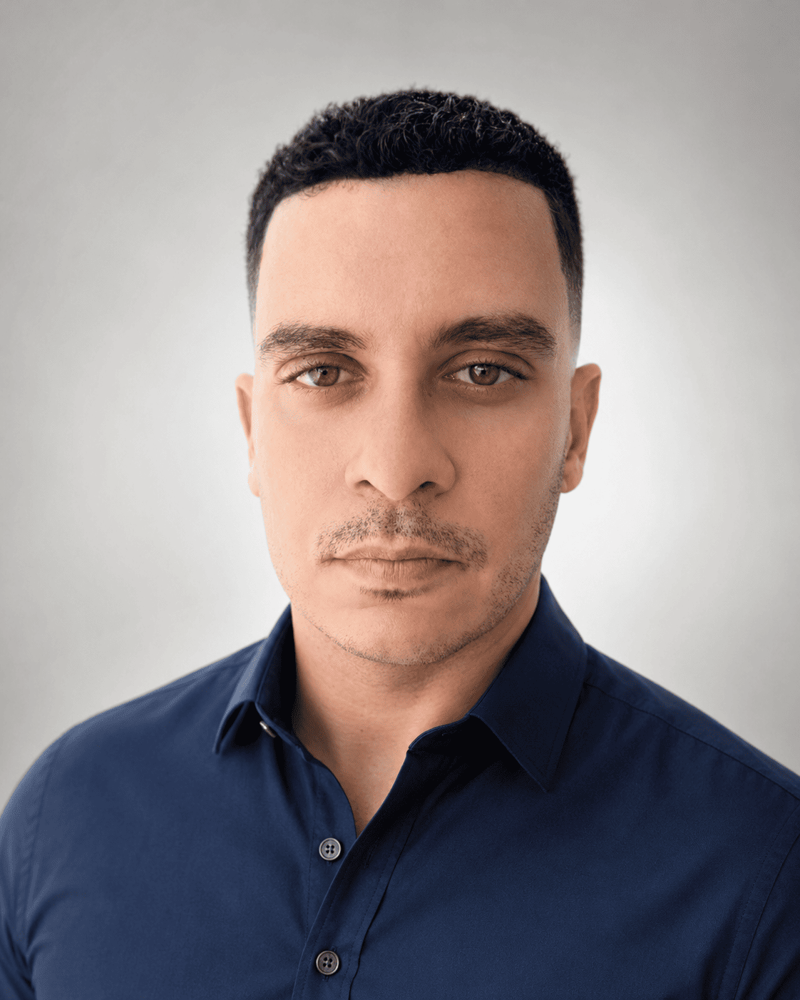

Escuta antes da solução
Entender o contexto e a necessidade vem antes de escolher ferramentas ou escrever código.

Portfólio pessoal
Estudante de Análise e Desenvolvimento de Sistemas
Desenvolvimento Web · UX/UI · APIs · Automação · IA generativa
Conecto a escuta, a disciplina e o olhar atento que desenvolvi na saúde e no movimento humano à construção de experiências digitais claras e úteis.
01 — Quem escreveu este código
Minha trajetória começou como personal trainer e acupunturista, profissões em que compreender pessoas, observar detalhes e acompanhar processos faz toda a diferença. Hoje, durante a graduação na UNINTER, levo essas mesmas competências para o desenvolvimento de software.
Não vejo essa passagem como um recomeço do zero. É uma integração: o raciocínio construído na prática em saúde encontra a programação, o design de experiências e a vontade de transformar problemas reais em ferramentas úteis.
O que levo comigo
Fundamentos humanos aplicados a uma nova linguagem profissional.
Entender o contexto e a necessidade vem antes de escolher ferramentas ou escrever código.
Aprender, praticar, testar e melhorar: avanços pequenos e contínuos constroem bases sólidas.
Quero criar experiências claras, acessíveis e conectadas a problemas que importam.
Interesses atuais